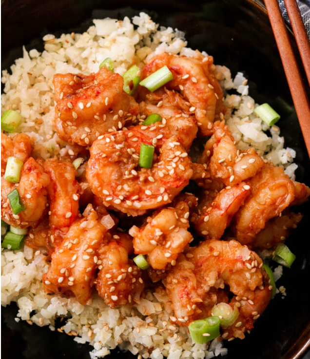

Chili Garlic Shrimp
Delicious heat.

Ingredients
- 1 lb shrimp peeled and deveined
- 1 tbsp avocado oil or your favorite cooking oil
- 1 tsp sesame oil
- 4 garlic cloves minced
- 1 inch ginger grated
- 1 tsp chili flakes
- Green onions & sesame seeds for garnish
Instructions
- Make the sauce first by blending all the ingredients together until smooth. Set aside.
- Heat avocado oil in a large skillet over medium high heat.
- Pat dry the shrimp, then add to the heated skillet in a single layer. Pan fry for 1 minute per side, then remove from the skillet. Set aside.
- Add sesame oil to the same skillet, then add garlic, ginger, and chili flakes. Stir for 1 minute until fragrant.
- Pour in the sauce, then simmer for 3-4 minutes until slightly thickened.
- Add the shrimp back into the skillet. Toss to coat in the sauce, then cook for 1-2 minutes until heated through. Serve warm.
Chef's Notes
Don't skimp on the heat and you'll have more leftovers for yourself.